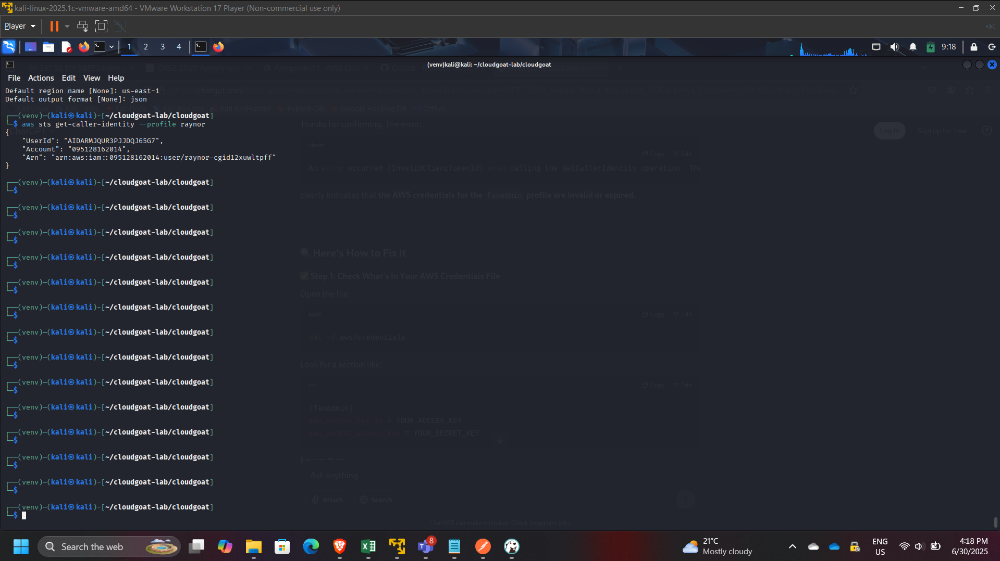
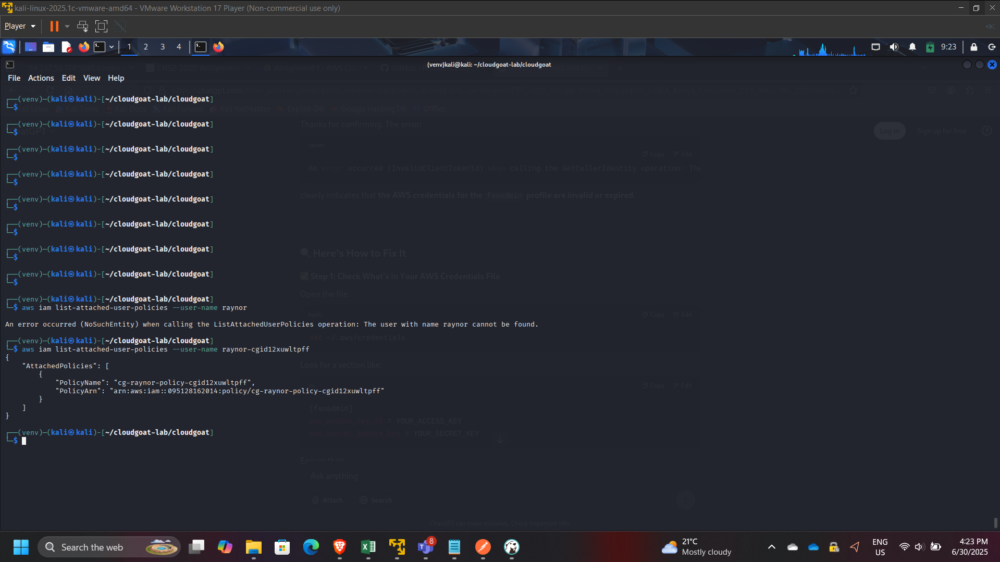
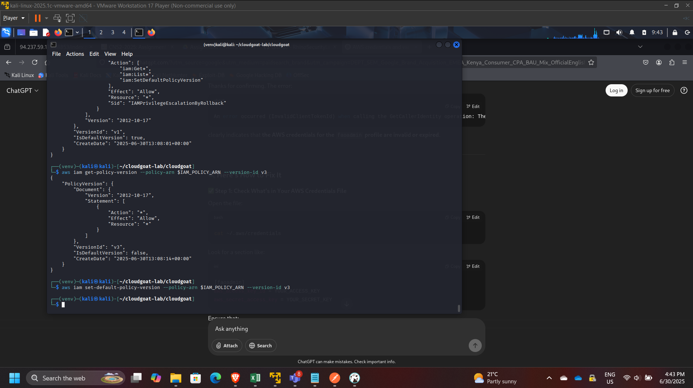

AWS IAM Privilege Escalation Assessment: Policy Version Rollback Abuse (CloudGoat)
Project: IAM Privilege Escalation via Policy Version Rollback (CloudGoat)
Timeline: June 2025
Role: Cloud Security Analyst (IAM Governance & Privilege Escalation Assessment)
Focus: IAM Policy Versioning Risk, Least Privilege, Privilege Escalation Detection & Mitigation
Tools: AWS CLI, IAM, Kali Linux, CloudGoat (Rhino Security Labs)
Executive Summary
Performed a hands-on cloud security assessment using the CloudGoat scenario iam_privesc_by_rollback to demonstrate how IAM policy versioning can be abused for privilege escalation.
Starting from a low-privileged IAM user (raynor), I identified permission to execute iam:SetDefaultPolicyVersion on a managed policy. By enumerating historical policy versions, I discovered an older version granting broad administrative permissions. Switching the default policy version escalated privileges and enabled administrative actions across the AWS account.
This project demonstrates a real-world governance failure mode: retaining overly permissive historical policy versions combined with mis-scoped policy-management permissions.
Lab Objectives
- Deploy and run a vulnerable AWS environment using CloudGoat
- Enumerate IAM user permissions, attached policies, and policy versions
- Identify escalation paths through IAM policy version rollback
- Escalate privileges by changing the default managed policy version
- Validate impact by performing privileged AWS actions
- Provide mitigation recommendations aligned with IAM governance best practices
Environment Setup
- Configured AWS CLI on Kali Linux VM
- Ran CloudGoat from Rhino Security Labs repository
- Used dedicated AWS credentials/profile for scenario execution

Scenario Overview
The CloudGoat scenario iam_privesc_by_rollback demonstrates a privilege escalation pattern where:
- A user appears low-privileged.
- The user can call
iam:SetDefaultPolicyVersionon a managed policy. - Older versions of that policy still exist.
- One older version is overly permissive (e.g.,
"Action": "*", "Resource": "*"). - The user rolls back to the permissive version to gain administrative access.
This is a practical example of how IAM policy lifecycle hygiene impacts security posture.

Step 1: Start the Scenario
Started the vulnerable environment:
cloudgoat create iam_privesc_by_rollback
Validated resources provisioned successfully.

Step 2: Confirm Identity and Initial Permissions
Confirmed the active identity:
aws sts get-caller-identity

Enumerated user policy attachments:
- Attached managed policies:
- aws iam list-attached-user-policies –user-name raynor
- Inline policies (if any):
- aws iam list-user-policies –user-name raynor

Step 3: Identify Policy Version Rollback Capability
Inspected effective permissions and located:
iam:SetDefaultPolicyVersion
This permission is high-risk because it enables switching active policy versions without changing the policy content.

Step 4: Enumerate Policy Versions
Listed policy versions:
aws iam list-policy-versions –policy-arn $IAM_POLICY_ARN
Observed multiple historical versions (up to 5 versions in AWS managed policy versioning).

Retrieved specific versions for review:
aws iam get-policy-version –policy-arn $IAM_POLICY_ARN –version-id v1
aws iam get-policy-version –policy-arn $IAM_POLICY_ARN –version-id v3

Found an older version (example: v3) granting broad permissions (administrative wildcard).

Step 5: Privilege Escalation via Rollback
Changed the default policy version to the over-permissive version:
aws iam set-default-policy-version –policy-arn $IAM_POLICY_ARN –version-id v3

Step 6: Verification of Elevated Privileges
Validated elevated access by performing administrative actions such as:
- Listing all IAM users:
- aws iam list-users

This confirmed that the rollback successfully escalated privileges from low access to administrative scope.
Governance Risk Analysis
This scenario highlights an enterprise IAM risk pattern:
- Old policy versions may contain broader permissions than current versions.
- Policy-management permissions (like
SetDefaultPolicyVersion) are frequently overlooked during least-privilege reviews. - Attackers can revert policies to gain privileges and optionally restore the original version to reduce detection.
Remediation Recommendations
- Enforce least privilege on IAM permissions:
- Restrict
iam:SetDefaultPolicyVersionto break-glass admin roles only
- Restrict
- Limit and review managed policy versions:
- Remove overly permissive historical versions
- Adopt policy lifecycle governance:
- Mandatory review before creating new versions
- Automated scanning for wildcard permissions
- Enable monitoring and alerting:
- CloudTrail alerts on policy version changes
- Detective controls for IAM privilege escalations
- Use AWS Organizations SCPs for guardrails:
- Block risky IAM actions except in admin accounts
Key Skills Demonstrated
- IAM privilege escalation analysis
- Policy version inspection and governance evaluation
- AWS CLI-based enumeration methodology
- Risk assessment and mitigation planning
- Security hygiene principles for enterprise AWS environments
Conclusion
This project demonstrated how IAM policy versioning, when combined with mis-scoped permissions like SetDefaultPolicyVersion, can enable full privilege escalation in AWS. It reinforced the importance of IAM governance, strict least-privilege enforcement, and continuous auditing of policy version history to prevent rollback-based escalation in real cloud environments.